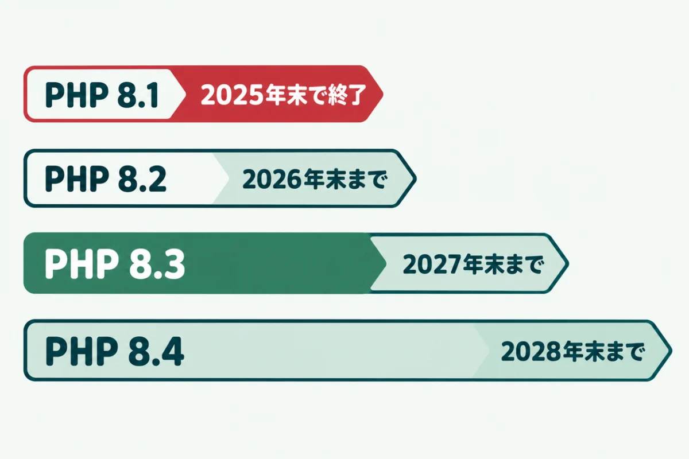
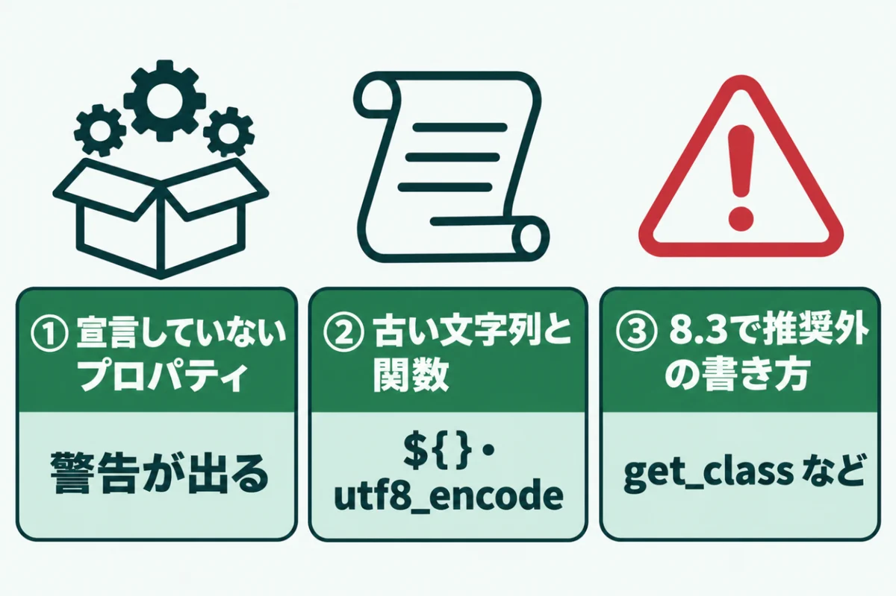
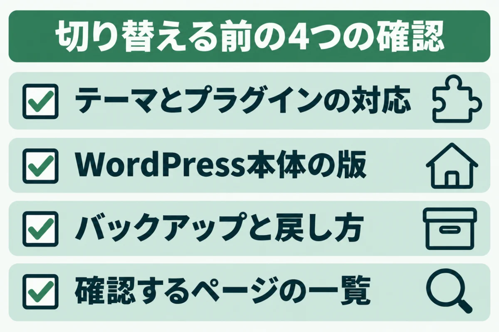
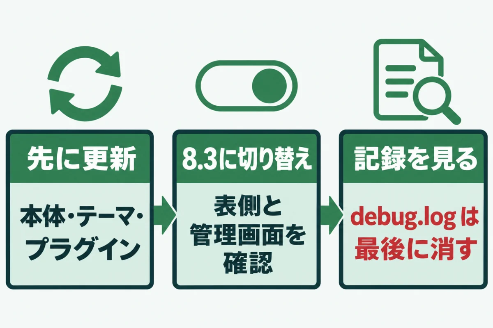
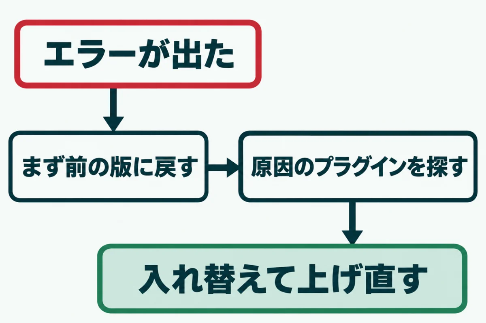

PHP 8.1から8.3へ上げる前に確認すること止まりやすい変化と事前チェックの手順

「サーバー会社からPHPを上げるよう案内が来た。8.1のままで大丈夫だろうか」と迷っていませんか？
PHP 8.1は公式のサポートがすでに終わり、次の8.2も2026年末で終わります。上げるなら、2027年末までサポートが続く8.3が1つの目安です。
この記事では、PHP 8.1から8.3へ上げる前に確認することを順番にまとめました。止まりやすい書き方の変化と、エラーが出たときの戻し方も紹介します。
もとにしたのは、PHPの公式マニュアルとWordPressの公式の資料です。運営者が自社サイトでPHPを上げたときに起きたことも入れています。作業の前に、一度通して読んでおくと安心でしょう。
PHP 8.1から8.3への移行が必要な理由

PHPは版ごとにサポートの期限が決まっていて、期限を過ぎると弱点が見つかっても直されません。8.1はすでに期限を過ぎた版です。
まずは、なぜ8.2ではなく8.3を目安にするのかを押さえましょう。8.4や8.5という新しい版もあるので、どれを選ぶかの考え方もまとめました。期限の数字は、PHPの公式サイトの表で確かめたものです。
PHP 8.1はサポートが終わっている
PHPの公式サイトによると、8.1のサポートは2025年12月31日で終わりました。最後に出た版は8.1.34で、これ以降は新しい弱点が見つかっても直りません。
サポートが終わっても、サイトはそのまま表示されます。ただし、見つかった弱点がふさがれないまま残り続けるのが問題です。サーバー会社によっては、古い版の提供を順に止めていきます。止まる直前に慌てないよう、早めに上げる計画を立てておきましょう。詳しくは、PHPのサポート終了とは？放置の危険と確認・更新の手順｜8.2は2026年末で終了をご覧ください。
8.2を飛ばして8.3へ上げる理由
8.1の次は8.2ですが、8.2のセキュリティのサポートは2026年12月31日までです。今から8.2に上げても、すぐにまた上げる作業が待っています。
8.3のサポートは2027年12月31日まで続くので、作業を1回で済ませやすいのが利点です。WordPressも、推奨する最低の版を8.3としています。WordPressの本体は、6.4以上なら8.3に対応している版です。8.2で入った変化も8.3にはそのまま含まれるため、確かめる中身はほとんど変わりません。
8.4や8.5を選ぶときの考え方
PHPには、8.4と8.5というさらに新しい版もあります。サポートの期限は、8.4が2028年末、8.5が2029年末までです。
期限だけを見れば、新しい版ほど長く使えます。ただし、テーマやプラグインが新しい版に追いついていないこともあるのです。WordPressの本体は、6.9以上なら8.5にも対応しています。古いプラグインを多く使うサイトなら、まず8.3に上げて落ち着いてから先を考える進め方もよいでしょう。どの版でも、確かめる手順は同じです。
PHP 8.3への移行で止まりやすい3つの変化

8.1から8.3へ上げると、8.2と8.3で入った変化をまとめて受けることになります。多くは「推奨されない」という警告の追加です。
警告が出ても、すぐに動かなくなるわけではありません。ただ、画面に警告の文が出たり、記録が増え続けたりします。将来の版で使えなくなる書き方なので、テーマやプラグインの作り手が直しているかを確かめておきましょう。
① 宣言していないプロパティの作成
PHP 8.2から、クラスに宣言していないプロパティを後から作る書き方が推奨されなくなりました。古いテーマやプラグインでよく使われていた書き方です。
残っていると「Creation of dynamic property」の警告が出ます。動きはそのままでも、警告の文が出るため、表示が乱れることがあるのです。直すにはプラグイン側の修正が要るので、新しい版が出ていないかを確かめてください。長く更新されていないプラグインほど、この警告が出やすい傾向があります。
② 古い書き方の文字列と関数
8.2では、文字列の中に「${変数}」の形で値を埋め込む書き方も推奨されなくなりました。文字コードを変える utf8_encode と utf8_decode の2つの関数も同じ扱いです。
どれも、日本語のサイト向けに作られた古いプラグインで見かけることがあります。警告の文に出る関数の名前を手がかりに、どのプラグインが原因かを探せるでしょう。名前で検索すると、作り手が対応を知らせていることもあります。作り手の更新が止まっているなら、同じ機能の別のプラグインへの切り替えを考えてください。
③ 8.3で推奨されなくなった書き方
8.3では、get_class などを引数なしで呼び出す書き方が推奨されなくなりました。数字でない文字列に「++」を使う書き方の一部や、assert_options 関数も同じです。
8.2までの変化に比べると、ふつうのテーマやプラグインで使われる場面は多くありません。古い自作のコードがあるサイトは要注意です。制作会社に作ってもらった独自の機能があるなら、8.3で動くかを先に聞いておきましょう。テーマの functions.php に足した処理も、確かめる対象に入ります。
PHP 8.3へ移行する前に確認する4つのこと

切り替えの操作そのものは、サーバーの管理画面で数分あれば終わります。差が出るのは、切り替える前の準備です。
次の4つを先に確かめておけば、エラーが出ても慌てずに戻せます。どれも、サイトを止めずに進められる作業です。確かめた結果は、表にまとめておくと制作会社とも共有しやすくなります。準備にかける時間は、サイトの大きさにもよりますが半日ほどを見ておくとよいでしょう。
① 今の版とテーマ・プラグインの対応
まず、今のPHPの版を確かめます。WordPressなら、管理画面の「ツール」の「サイトヘルス」を開いてください。「情報」の「サーバー」の欄に版が出ています。
次に、使っているテーマとプラグインの一覧を書き出しましょう。WordPress.orgのプラグインのページには、必要なPHPの版と最終更新日が載っています。何年も更新されていないプラグインは、8.3で止まる候補です。有料のテーマやプラグインは、作り手のサイトで対応する版を確かめてください。
② WordPress本体の版
WordPressの公式の対応表では、本体が6.4以上なら8.3に対応しています。それより古い本体のまま8.3に上げると、本体の側で警告やエラーが出ることがあるのです。
本体が古いときは、PHPより先に本体を新しい版にします。ただし、何年も更新していない本体を一気に上げるのは危険です。本体とPHPを交互に少しずつ上げる順番を決めてから進めましょう。新しい本体が今のPHPで動くかも、あわせて対応表で確かめておいてください。
③ バックアップと戻し方
切り替える前に、ファイルとデータベースの両方のバックアップを取ります。サーバー会社の自動バックアップがある場合も、何日分を保存しているかを確かめてください。
あわせて、前の版に戻す操作の画面の場所も見ておきましょう。多くのサーバーでは、切り替えと同じ画面で前の版を選び直せます。戻す手順が分かっていれば、エラーが出ても数分で元に戻せるでしょう。作業はアクセスの少ない時間帯を選ぶと、お客さまへの影響を小さくできます。
④ 試す場所と確認するページの一覧
サーバーによっては、本番と同じ中身の試し用のサイトを作れます。WordPressの公式の手引きも、エラーを調べる作業は試し用の場所で行うよう勧めているのです。
試し用の場所がなければ、本番で切り替える前に確認するページの一覧を作りましょう。トップ、お問い合わせ、よく見られるページ、管理画面の投稿の画面などです。お問い合わせフォームの送信まで試すと、見落としが減ります。一覧があれば、切り替えたあとに同じ順で見て回れるでしょう。
PHP 8.3への移行の手順と確認のしかた

準備が済んだら、更新、切り替え、確認の順に進めます。一度に全部を変えず、1つずつ進めるのがこつです。
何かを変えるたびに表示を見ておけば、エラーが出たときに原因を絞り込みやすくなります。運営者も、自社サイトでPHPを上げたときは前後で全ページを読み込んで比べました。作業の記録を残しておくと、次に上げるときにも役立ちます。
本体・テーマ・プラグインを先に更新する
PHPを切り替える前に、WordPressの本体とテーマ、プラグインを新しい版にします。作り手が8.2や8.3への対応を済ませていれば、更新だけで警告の原因が消えることもあるのです。
更新したら、いったん今の8.1のまま表示を確かめましょう。更新で起きた不具合とPHPの不具合を分けるためです。使っていないプラグインは、この機会に停止ではなく削除しておくと、確かめる数が減ります。更新後の表示に問題がなければ、次の切り替えに進んでください。
PHPを切り替えて表側と管理画面を確かめる
サーバーの管理画面で、PHPの版を8.3に切り替えます。切り替えたら、作っておいた一覧の順にページを開いて表示を確かめましょう。
表側だけでなく、管理画面で投稿を開き、下書きを保存できるかも見てください。キャッシュが残っていると古い表示が出ることがあります。キャッシュのプラグインやサーバーのキャッシュを消してから見ると確実です。「サイトヘルス」を開き、PHPの版が8.3になっていることも確かめます。
エラーの記録を見る
画面に出ない警告は、エラーの記録で見つけられます。WordPressでは、wp-config.php で記録の設定を有効にしてください。すると、wp-content の debug.log に記録が残るのです。
公式の手引きは、画面には出さず記録だけを残す使い方を勧めています。確かめ終えたら、設定を元に戻して debug.log を消すことが大切です。ファイルが残ると、外から読めてしまうことがあります。サーバー会社の管理画面でエラーの記録を見られる場合は、そちらも使ってください。
PHP 8.3への移行でエラーが出たときの戻し方

エラーが出たら、原因を探す前に表示を元に戻します。お客さまが見る画面を先に守るのが優先です。
前の版に戻せば、ほとんどの場合は表示が元どおりになります。そのうえで、原因を探して直し、もう一度上げ直しましょう。戻したことと理由は、作業の記録に書き残しておいてください。次に上げるとき、同じところでつまずかずに済みます。
まず前の版に戻して表示を戻す
真っ白な画面やエラーの文が出たら、切り替えと同じ画面で8.1を選び直します。多くのサーバーでは、数分ほどで反映されるはずです。
戻したら、表示が元どおりになったかを一覧の順に確かめましょう。戻しただけではサポートの切れた版のままなので、ここで終わりにしないことが大切です。前の版に戻しても直らないときは、取っておいたバックアップから戻します。自分で戻すのが難しければ、サーバー会社か制作会社に相談してください。
原因のプラグインを探して入れ替える
よくある原因は、新しいPHPに対応していない古いテーマやプラグインです。運営者の自社サイトでも、PHPを8.3に上げたら管理画面にエラーが出ました。原因は、何年も更新していなかったプラグインです。
新しい版のプラグインに入れ替えたところ、エラーは出なくなりました。プラグインを1つずつ止めて表示を見ると、原因を絞り込めます。原因が分かったら、更新するか、同じ機能の別のプラグインに置き換えましょう。直せたら、もう一度8.3に切り替えて同じ手順で確かめてください。
URLを入れるだけで、PHPやWordPressの版など8項目を無料で判定します。登録はいりません。
無料で診断するPHP 8.3への移行に関するよくある質問
PHP 8.1のままだと、すぐにサイトが見られなくなりますか？
すぐに見られなくなるわけではありません。サポートが終わっても、PHPはそのまま動き続けます。ただ、新しく見つかった弱点が直らないため、狙われやすい状態が続くのです。サーバー会社が古い版の提供を止めると、自動で切り替わることもあります。思わぬ時期に表示が崩れないよう、自分で計画を立てて上げておきましょう。
8.2を挟まずに、8.1から8.3へ直接上げても大丈夫ですか？
多くの場合、直接上げて問題ありません。8.2で入った変化は、8.3にもそのまま含まれています。間に8.2を挟んでも、確かめる中身はほとんど変わらないのです。ただし、古いプラグインが多いサイトでは、警告がまとめて出ることがあります。試し用の場所があるなら、先にそこで8.3を試しておくと安心して進められるでしょう。
「Deprecated」という文字が画面に出ました。壊れたのですか？
Deprecatedは、推奨されない書き方を使っているという警告です。多くの場合、その機能はそのまま動いています。ただ、画面に警告の文が出ると見た目が崩れるため、そのままにはできません。警告に出る名前から原因のプラグインを探し、更新か入れ替えを考えてください。急ぐときは、いったん前の版に戻してから落ち着いて探しましょう。
サーバー会社によって、切り替えの手順は違いますか？
切り替える画面の場所や名前は、サーバー会社ごとに違います。ただ、事前に確かめることと、エラーが出たときの戻し方の考え方は同じです。エックスサーバーは、エックスサーバーでPHPのバージョンを上げる手順と事前チェックにまとめました。ConoHa WINGやさくらのレンタルサーバでも、同じ流れで進められます。
制作会社に頼むときは、何を伝えればいいですか？
今の版が8.1で、8.3へ上げたいことをまず伝えます。あわせて、確かめてほしいページの一覧と、作業してよい日時を伝えましょう。エラーが出たときに前の版へ戻してよいかも、先に決めておくと話が早くなります。見積もりを頼むときは、プラグインの入れ替えが要る場合の扱いも聞いておいてください。作業のあとに、どのページを確かめたかの報告をもらうと安心です。
まとめ
PHP 8.1はサポートが終わり、8.2も2026年末で終わります。上げるなら、2027年末までサポートが続く8.3が目安です。
切り替える前に、プラグインの対応、本体の版、バックアップ、確認するページの一覧をそろえましょう。1つずつ変えて、そのたびに表示を確かめることが、止めずに上げるいちばんの近道です。
まずは、今の状態を知るところから。
URLを入れるだけで、数十秒で判定が出ます。登録はいりません。